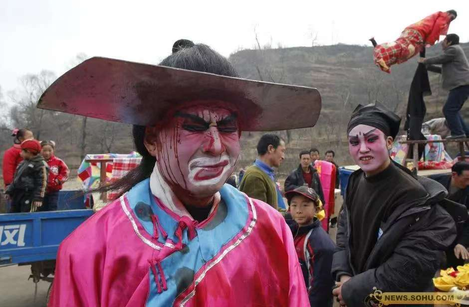
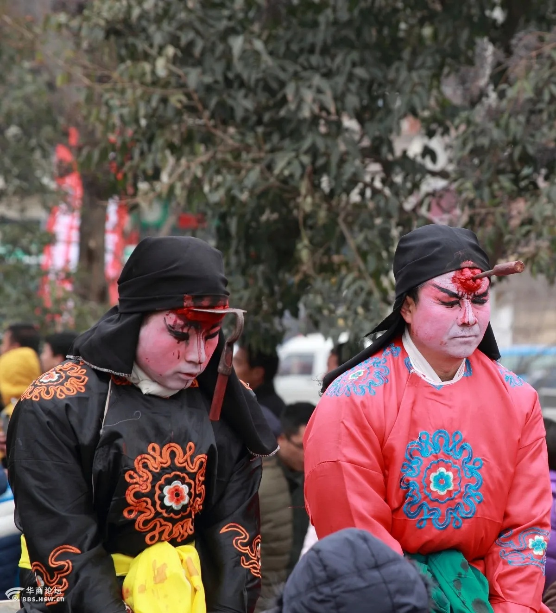
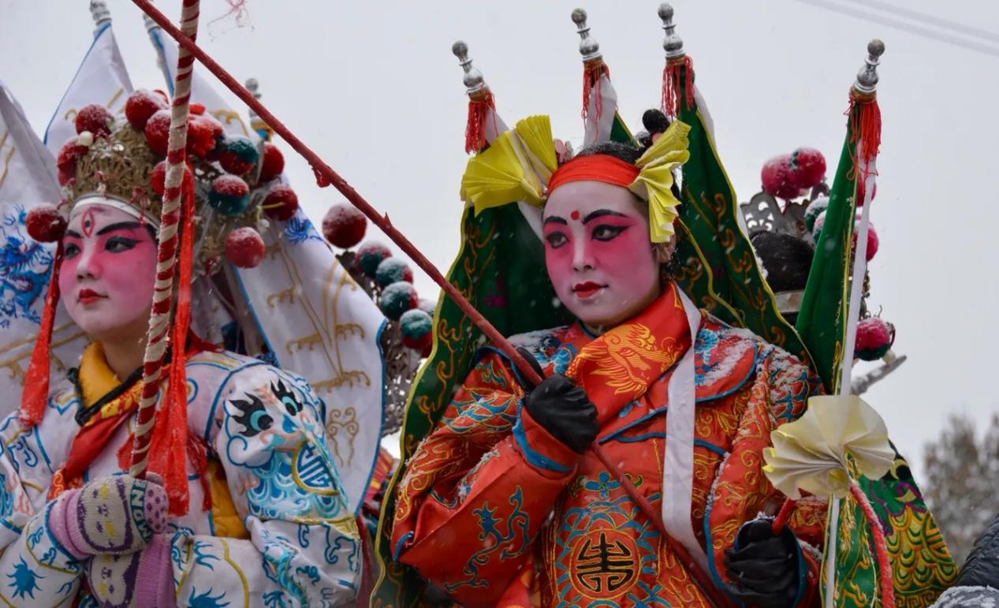

黄土高原的寒风里，一阵急促的锣鼓声划破村落的宁静。斧头"嵌"入额头、铡刀"劈"开胸膛，暗红的"血迹"顺着粗布衣襟缓缓滴落，围观的人群屏息凝神——这不是恐怖片的片场，也不是猎奇的噱头，而是流传于陕西宝鸡陈仓区赤沙镇、三寺村等地的血社火，当地人称之为"扎快活"，一项用极致视觉冲击承载千年信仰的民间非物质文化遗产。它以最粗犷的艺术形式，在神与俗之间架起桥梁，在惊悚与温情之中，藏着中国人最本真的价值追求。
血社火的名字里，"血"是视觉表征，"社火"是文化内涵。作为中国民间社火艺术中最具个性的分支，它跳出了传统社火的喜庆热闹，另辟蹊径以"惊悚"为表达载体。表演题材多取自《水浒传》等家喻户晓的传统小说与戏曲经典，其中"武松杀西门庆""武二杀嫂"的片段更是常年占据核心演出名单，为何偏偏是这两个故事？因为它们最直白地诠释了"惩恶扬善"的主题——西门庆的跋扈、潘金莲的不忠，代表着民间最憎恶的"恶"，而武松的刚正不阿、替天行道，则是民众心中"正义"的化身。
表演者的化妆技艺堪称民间特技中的"天花板"。没有特效辅助，仅凭油彩、乳胶、棉花等简单材料，工匠便能将斧头、铡刀、剪刀、锥子等各式凶器栩栩如生地"扎"在表演者的脸上、胸口、腹部，再用特制的红色颜料模拟鲜血淋漓、开膛破肚的效果，细节逼真到让人不敢直视。但这份惊悚从不是为了追求感官刺激，而是最朴素的教化工具。在教育尚不普及的年代，村民们无法通过书本知晓善恶对错，血社火便以这种"看得见、摸得着"的方式，将"善有善报，恶有恶报"的价值观刻进每个人的心里。
"快活"二字的命名，更藏着民众的精神期许。一方面谐音《水浒传》中的"快活林"，呼应表演题材的文化渊源；另一方面则直指核心——铲除恶人、伸张正义，方能让人心快活、村落安宁。游演时，扮作武松的表演者威风凛凛，"凶器"加身的"恶人"形象狼狈不堪，围观的老人会指着"恶人"告诫孩童："做人要端正，不然就会像他这样遭报应"。一场游演，便是一次流动的道德课堂，用最直接的视觉语言，完成对善恶的评判与传承。
关于血社火的起源，宝鸡三寺村流传着一段温暖又神秘的传说。百年前，一位河南铁匠辗转来到三寺村谋生，却不幸身染重病，卧床不起。村里的吴穷汉心地善良，见铁匠孤苦无依，便主动承担起照料之责，不仅为他请来了郎中，还端汤送药、悉心看护，直至铁匠痊愈。为报答这份救命之恩，铁匠将一套"血社火"的完整技法倾囊相授，并叮嘱道："耍快活能驱灾避难、保佑村子平安吉祥"。从此，这项技艺便在吴家扎根，以家族传承的方式代代延续，成为三寺村独有的文化印记。
这个起源传说也为我们留下了一处耐人寻味的谜题：如今的河南境内，并无血社火流传的痕迹，这位铁匠的技艺又源自何方？是江湖失传的古老技法，还是他偶然习得的独门绝技？无人能给出确切答案，也正是这份未知，为血社火增添了一层神秘色彩。更令人称奇的是，这项技艺的传承有着严苛的规矩——化妆过程对外绝对保密，核心技法只传家族内部成员，绝不外泄。老艺人们说，这既是为了保持表演的神秘感，也是为了守住报恩的初心，不让这份带着温度的技艺被商业化稀释。
在科技飞速发展的今天，血社火的传承依然坚守着古老的准则。年轻一代的传承人需在长辈的口传心授下，花费数年时间学习化妆技巧、熟悉表演流程、理解文化内涵。从"凶器"的固定方式到"血迹"的色彩调配，从游演的路线规划到与锣鼓点的配合，每一个细节都不能马虎。这种坚守，让血社火没有在时代浪潮中褪色，反而因这份纯粹，成为了珍贵的非遗瑰宝。
血社火从不是单纯的民间表演，它与神庙信仰有着根深蒂固的羁绊，整个游演过程就是一场庄重的祭祀仪式。宝鸡三寺村的蛟龙寺，三间古朴的大瓦房内供奉着菩萨神像，这里是血社火游演的"精神核心"，所有流程都必须围绕寺庙展开，千百年来无人敢更改。
游演的开篇，是化妆好的"探马"先行，手持香火走进蛟龙寺，对着神像虔诚祭拜，禀报神灵"社火将启，祈求庇佑"；游演结束后，所有表演者必须返回寺庙卸妆，将"凶器"与"血迹"卸下，寓意着将"邪恶"交由神灵审判，净化自身与村落。即便是受邀到外地表演，这个规矩也绝不打破——表演者会先在当地的神庙祭拜，结束后再在神庙卸妆，这份对信仰的坚守，早已融入血社火的骨髓。
为何会有这样的仪式？这源于古人"以血祭神"的原始信仰。在传统文化中，血是生命的象征，被认为是沟通天神最直接、最神圣的媒介。那位传授技艺的河南铁匠，或许正是深知这一点，才将血社火与祭祀结合——以西门庆、潘金莲等恶人形象作为祭祀的"牺牲"，用"血"向神灵献祭，祈求神灵赐福，保佑村落远离灾祸、平安吉祥。
随着时间的推移，血社火的祭祀内涵逐渐演化，成为了民众共同的文化信仰。当地人坚信，参与血社火游演能避灾避邪，哪怕只是扮演一个"死人"，也是一件极为吉利的事。有村民说，家里孩子小时候经常生病，后来让孩子参与了一次游演，扮演被"惩恶"的小反派，此后身体便渐渐硬朗起来。这种信仰或许带着几分迷信，但背后藏着的，是民众对美好生活的向往，是对人神天地和谐共生的美好愿景。
血社火没有华丽的舞台，没有精致的道具，甚至没有专业的表演者——所有参与者都是当地村民，农忙时种地，农闲时排练。但就是这样一项"草根艺术"，却在黄土大地上扎根千年，成为了国家级非物质文化遗产的重要组成部分。它的魅力，在于其最原始、最本真的表达，在于它将民间智慧、道德教化、信仰寄托完美融合。
它的化妆技艺体现了劳动人民的创造力。没有专业的特效团队，老艺人仅凭经验，用乳胶模拟皮肤的质感，用棉花塑造"伤口"的凸起，用不同浓度的红色颜料区分"鲜血"与"血痂"，每一个细节都经过反复打磨，才能达到以假乱真的效果。这种"土法特效"，比现代影视特效更具温度，因为它承载着一代人的记忆与智慧。
它的传承，是对文化根脉的守护。在商业化、娱乐化盛行的今天，很多民间艺术为了迎合市场，不断改变自身的内核，而血社火始终坚守着"惩恶扬善""信仰祭祀"的初心，以家族传承的方式，将技艺与文化一代代传递。年轻的传承人或许会用手机拍摄排练过程，但绝不会改变游演的流程与内涵；或许会在社交媒体上分享血社火的照片，但绝不会为了流量而刻歪曲文化。
如今，越来越多的人开始关注这项独特的非遗。每年正月，宝鸡赤沙镇、三寺村等地的血社火游演，都会吸引来自全国各地的游客与摄影师。人们带着好奇而来，却被其背后的文化内涵深深打动——那些看似"血腥"的表象，实则是文明传承的印记；那些夸张的表演，藏着中国人最朴素的善恶观与信仰力。

血社火，是一场穿越千年的对话。它用较为怪诞惊悚的艺术形式，包裹着惩恶扬善的文化内核；用古朴的传承方式，守护着最本真的民间智慧。它告诉我们，真正的非遗是活在民间、融入生活、藏在每个人心中的文化脉络。当锣鼓声再次响起，那些"血腥"的面具之下，是生生不息的文化根脉，是从未改变的善恶标尺，是世代中国人对美好生活的永恒向往。